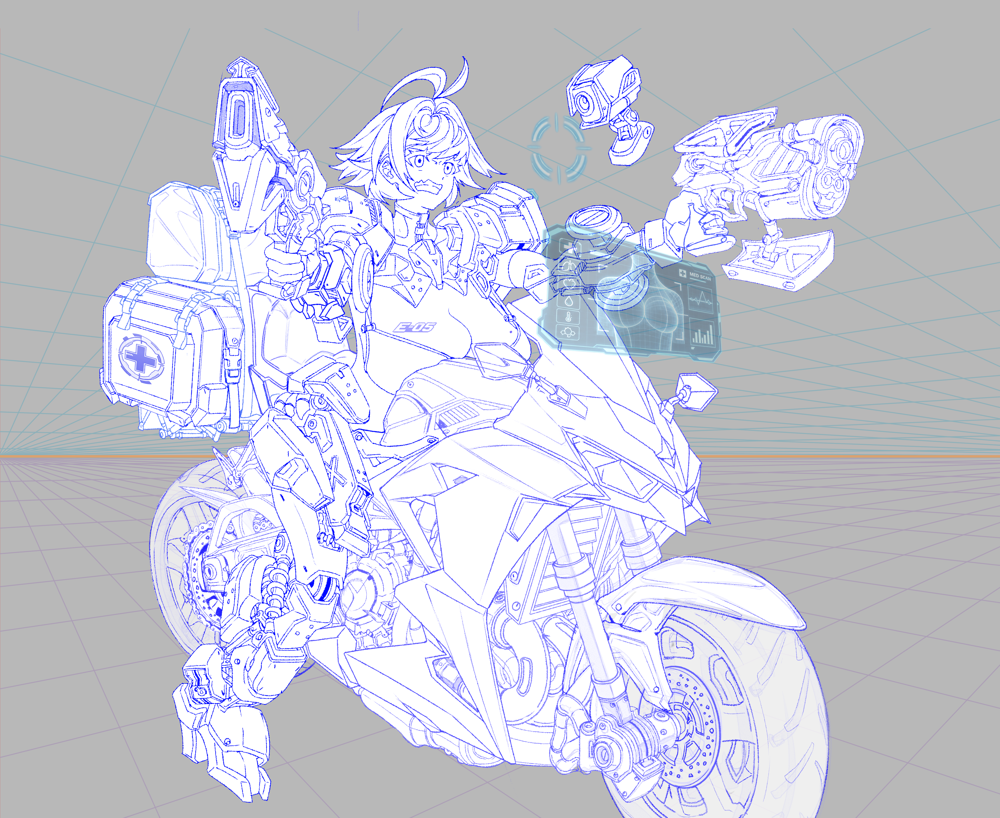

이제그리고싶었던 남자 엑쇼슈트 갑니다

이제그리고싶었던 남자 엑쇼슈트 갑니다
와 좆된다..
강아지상, 단발, 왕가슴 녀가 H2R 타는거 그려죠
애기 굶겠다
오오
대충보고 아일랜드지도인줄알앗네
https://www.dogdrip.net/734313228
채색 딸깍 해봤는데 스캐치 디테일을 못따라오네
진짜 잘그린다
아직 딸깍이기술로는 선화 드로잉의 디테일까진못잡아요 ㅋㅋ
감사합니다 재밌네요
젖너프 뭐지여
채색 젖통이 너무작아져서 별로야
채색이아니고 그림이바뀌어버렷는ㅅ데요
찌찌 너프했네 ㅋㅋ
개맛없어졌네
이사람 빨리 어디 가둬놓고 짤만 뽑게 해야할듯
빈유 케릭터는 그리실 생각 없으십니까..?
너무 매젖인데
젖과 장식들이 훌륭하군
아니 화풍이 많이 변했네 라고 생각했는데 다른사람이네
개드립에 그림 잘그리는 애들 왤캐 많냐? ㄷㄷ
퍼리슈트도 그려죠
다리를 보니 벌써 한번 했구나
난 직육면체도 제대로 못 그리는데 그림 고수들 볼 때마다 신기함
와
왕젖 개추 ㅋㅋ

???:댓글달지말아봐
와저탱
털을 좀 추가하는건 어때
와 좆되네ㄷㄷ 이정도면 취미는 아닐듯
선어떻케 잘따
저정도 그리는데 얼마나 걸림? 한달?
뒤에 배경은 원근법? 그거 때문에 해놓은 거야?
아까 누가 ai딸깍이라던데 .. 그사람 여기는 안오려나
ㅇㅃㅃㅇㄱ
젖!!!!!
이자식 좀 치네